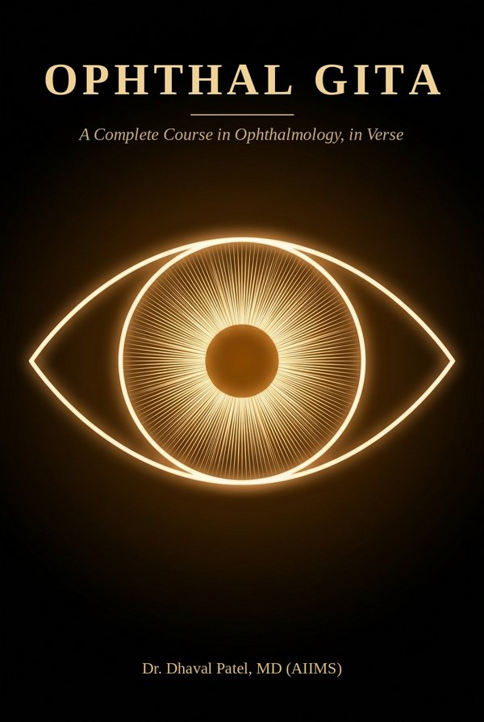

Ophthal GITA: A Complete Course in Ophthalmology, in Verse (Free Sample Verses)
For: PG residents · Practising ophthalmologists
Last updated: November 2026


The Gita opens with a warrior who has the skill but cannot see the decision. So does an ordinary day at the slit lamp. Ophthal GITA teaches the whole of ophthalmology in verse, because what is memorised in metre is remembered for a lifetime of practice. Anatomy to oncology, optics to emergencies: eighteen chapters, every one pushed to postgraduate depth.
- 18 chapters (adhyayas), in the manner of the Bhagavad Gita, covering the whole of ophthalmology to PG depth
- Over 1,700 numbered verses (chapter.verse), with ⚠ marking every sight- or life-threatening presentation
- Each chapter opens with an original Sanskrit verse, transliterated and translated
- 108 Arjuna’s dilemmas: real clinical decisions answered in Krishna’s counsel
- Appendices: decision tools, optical formulas, landmark trials index, mnemonics, pioneers and an index by verse
Kindle edition, by Dr Dhaval Patel, MD (AIIMS). Read on any phone, tablet or computer with the free Kindle app.
Amazon links are affiliate links; Sadbhaav Eye Clinic may earn a small commission at no extra cost to you.
The 18 adhyayas
| # | Adhyaya | Meaning | Covers |
|---|---|---|---|
| 1 | Rachana Adhyaya | The Chapter of Structure | Anatomy of the eye |
| 2 | Prakasha Adhyaya | The Chapter of Light | Optics and refraction |
| 3 | Marga Adhyaya | The Chapter of the Pathway | The visual pathway |
| 4 | Netra-Rakshaka Adhyaya | The Chapter of the Eye’s Guardians | Eyelids, lacrimal system and ocular surface |
| 5 | Bahya Vyadhi Adhyaya | The Chapter of Surface Disease | Conjunctiva, cornea and sclera |
| 6 | Uvea Vyadhi Adhyaya | The Chapter of the Middle Coat’s Disease | Uveitis |
| 7 | Lens Vyadhi Adhyaya | The Chapter of the Lens’s Disease | Cataract and lens |
| 8 | Kacha Roga Adhyaya | The Chapter of the Silent Thief | Glaucoma |
| 9 | Drishti-Patala Vyadhi Adhyaya | The Chapter of the Retina’s Disease | Retina and vitreous |
| 10 | Bala Netra Adhyaya | The Chapter of the Child’s Eye | Paediatric ophthalmology and strabismus |
| 11 | Kaksha Vyadhi Adhyaya | The Chapter of the Orbit’s Disease | Orbit |
| 12 | Netra-Mastishka Adhyaya | The Chapter of Eye and Brain | Neuro-ophthalmology |
| 13 | Aapatkalin Adhyaya | The Chapter of the Emergency | Trauma and emergencies |
| 14 | Aushadhi Adhyaya | The Chapter of Medicine | Ocular pharmacology |
| 15 | Sharira Vyapaka Roga Adhyaya | The Chapter of the Body’s Disease | Systemic disease and the eye |
| 16 | Arbuda Adhyaya | The Chapter of the Growth | Ocular oncology |
| 17 | Punarsthapana Adhyaya | The Chapter of Restoration | Refractive surgery and restoration |
| 18 | Pariksha-Jnana Adhyaya | The Chapter of Examination and Wisdom | Examination and clinical wisdom |
How the book is built
- Verse numbering: every verse is numbered chapter.verse (7.60, 13.22 and so on), and the appendices and index point to verses, not pages.
- The ⚠ symbol marks sight- or life-threatening presentations needing same-day action; scanning a chapter for it gives a fast review of its emergencies.
- Six appendices: clinical decision tools, key optical formulas and definitions, named trials and landmark studies, mnemonics and memorable signs, Arjuna’s dilemmas, and pioneers and landmark discoveries from Sushruta to OCT.
Free sample verses
Three short passages and two dilemmas from the book. Verse numbers follow the book’s own chapter.verse system; ⚠ marks a sight- or life-threatening presentation.
Chapter 7 · Lens Vyadhi Adhyaya · The Chapter of the Lens’s Disease
Opening verse
स्वच्छं यत्किल जन्मतः कमलवत् कालेन यत्क्लिश्यते ।
आलोकस्य निरोधकं भवति तत्कर्तव्यमस्योद्धृतिः ॥
svacchaṁ yat kila janmataḥ kamalavat kālēna yat kliśyatē,
ālōkasya nirōdhakaṁ bhavati tat kartavyam asyōddhṛtiḥ.
“That which is clear from birth, like a lotus, yet is clouded in time — when it becomes an obstruction to light, its removal is then the duty at hand.”
A second invocation: Nishkama Karma, action without attachment to its fruit
कर्तव्यं शल्यकर्माणि कुशलेन प्रयत्नतः।
फलं तु नाधिकारोऽस्ति चिकित्सकस्य कर्हिचित्॥
सम्यक् दृष्ट्या समाचारः कार्यः शान्तमनास्तथा।
सिद्धिं वाऽसिद्धिमासाद्य समत्वं नैव मुञ्चति॥
kartavyaṁ śalyakarmāṇi kuśalena prayatnataḥ, phalaṁ tu nādhikāro’sti cikitsakasya karhicit.
samyak dṛṣṭyā samācāraḥ kāryaḥ śāntamanās tathā, siddhiṁ vā’siddhim āsādya samatvaṁ naiva muñcati.
“The surgical act must be performed skilfully and with full effort; yet the physician never has a claim upon its fruit. Conduct must be carried out with right vision and a tranquil mind, and whether success or failure follows, equanimity should never be abandoned.”
Capsule, cortex, nucleus, held by zonular threads so near,
Now learn how clarity is lost, and clouding does appear.
Yet millions still are blind for want of surgery’s simple due,
Learn the pattern, cause, and timing — for the knife is what will renew.
Crystallin proteins, detailed in Chapter One, must remain correctly folded and closely packed throughout life each day,
Oxidative stress is the central pathogenic mechanism implicated across most cataract types in its display,
Reactive oxygen species accumulate as antioxidant defences, particularly glutathione, decline with age along the way.
Chapter 8 · Kacha Roga Adhyaya · The Chapter of the Silent Thief (glaucoma)
चौर इवागत्य विना शब्देन दृष्टिं हरति यो रोगः ।
अजानतोऽपि जनस्य क्षये कालेन सर्वं तमोमयम् ॥
caura ivāgatya vinā śabdēna dṛṣṭiṁ harati yō rōgaḥ,
ajānatō’pi janasya kṣayē kālēna sarvaṁ tamōmayam.
“That disease which, like a thief, comes without any sound and steals the sight — while the person remains unaware, in time all becomes darkness.”
Trabecular meshwork, Schlemm’s canal, uveoscleral outflow’s decree,
Now learn what happens when this drainage fails, and pressure comes to be.
By the time the patient notices, much damage the disease recalls,
Learn to find it early, for restoration never answers glaucoma’s calls.
Chapter 13 · Aapatkalin Adhyaya · The Chapter of the Emergency
क्षणे क्षणे यत्र कालो दृष्टेः शत्रुरिवाचरेत् ।
तत्र विलम्बो न कार्यः शीघ्रमेव प्रतिक्रिया ॥
kṣaṇē kṣaṇē yatra kālō dṛṣṭēḥ śatrur ivācarēt,
tatra vilambō na kāryaḥ śīghram ēva pratikriyā.
“Where, moment by moment, time itself behaves as an enemy of sight, there no delay should be made — the response alone must be swift.”
Copious irrigation immediately, before history is even taken each day,
Litmus paper to confirm neutral pH before irrigation is discontinued along the way.
Alkali causes liquefactive necrosis, penetrates deeply into tissue each day,
Acid causes coagulative necrosis, which paradoxically limits further penetration’s display,
Except hydrofluoric acid, which penetrates deeply despite its acidic array.
Arjuna’s dilemmas: two free samples
The book closes with 108 clinical decisions in the Gita’s own dialogue form: Arjuna, the resident, brings the dilemma; Krishna answers with the reasoning and the verse it comes from. Decide what you would do before you open Krishna’s counsel.
Dilemma 4 — Halos, Nausea, and a Cataract
Arjuna’s dilemma
Haloes ring her vision, nausea grips, pressure fifty-eight and steep,
Her lens sits swollen, white and intumescent, dense and deep,
Once the cornea clears for laser, will iridotomy let her keep
Her pressure tamed for good, or does some other cause still creep?
Read Krishna’s counsel
Look again, Arjuna, at the cause before the standard blade,
A swollen lens that crowds the angle is a mechanism laser cannot invade,
Phacomorphic glaucoma, verse 8.26’s own truth displayed,
Extraction of the lens, not iridotomy alone, must be the trade.
Begin the medical stepdown first, to bring the pressure down,
But let no laser’s early triumph fool thee towards a hasty crown,
The lens remains the engine of the storm that struck her down,
Remove the cause, or watch the crisis wearing calm’s own gown.
Dilemma 5 — Sudden, Painless, and Terrifying
Arjuna’s dilemma
While tending to his garden, sudden darkness took his sight,
No pain accompanied the loss, a cherry spot glows red and bright,
His family asks if clinic follow-up this week will set it right,
Is this a matter for the eye alone, or a graver, wider plight?
Read Krishna’s counsel
This is no eye-clinic matter waiting patiently in line,
The artery that closed within his eye may close within a vessel more malign,
Stroke pathways must engage at once, verse 9.29 draws the line,
While ocular measures, if the window still permits, combine.
Ask him too of jaw and scalp before he leaves your sight this day,
For if the arteritic cause, not plaque, has stolen vision’s ray,
The second eye stands hours, not weeks, from following the first away,
Steroids begin on suspicion’s word — the fellow eye will not delay.
Carry the whole course in memory
Eighteen chapters of verse, 108 dilemmas and six appendices, on your phone in the Kindle app.
Amazon links are affiliate links; Sadbhaav Eye Clinic may earn a small commission at no extra cost to you.
Also on the site: My thoughts in ophthalmology and the Prayer of the Cataract Surgeon.
Frequently asked questions
Is Ophthal GITA a religious book?
No. It is a complete ophthalmology course written in verse, using the structure of the Bhagavad Gita (18 chapters, opening Sanskrit verses, Arjuna’s questions and Krishna’s counsel) as its frame. Readers of any background can use it.
Why verse?
Metre and rhyme are a scaffold the memory holds on to long after prose is forgotten. Each chapter is written for postgraduate depth, so the verse carries real exam and clinic content, not summaries.
Who is it for?
PG residents and practising ophthalmologists who want a complete revision course that is easier to remember; teachers looking for memorable lines; and anyone who loves both ophthalmology and poetry.
What else is in the book besides verses?
Clinical decision tools (algorithms and differential tables), key optical formulas, an index of named trials and landmark studies, mnemonics and memorable signs, 108 Arjuna’s dilemmas, a history of pioneers and an index by chapter.verse.
Do I need to read Sanskrit?
No. Each Sanskrit opening verse is given in Devanagari, in transliteration and in English; all the teaching verses are in English.
Other books that teach the same way


Compare all four in Learn ophthalmology differently, or see all books by Dr Dhaval Patel and the exam book chooser.
Revise with flip cards
Key sources
- Patel D. Ophthal GITA: A Complete Course in Ophthalmology, in Verse. Kindle edition, 2026. ASIN B0HKJZTYJF.
📘 Want the exam-ready deep dive? This topic, and much more is covered in Ophthalmology Explorer (A High-Yield Clinical Reference for Ophthalmology Residents, Fellows & Board Exams) — available on Kindle. See all my books.
How to cite this page
Patel D. Ophthal GITA: A Complete Course in Ophthalmology, in Verse (Free Sample Verses). RPC Rounds (Sadbhaav Eye Clinic). Updated November 2026. Available at: https://www.sadbhaavclinic.com/ophthal-gita.html. Accessed [date].
Want to know more about treatment? Read about all books by Dr Dhaval Patel or book a consultation with Dr. Dhaval Patel.